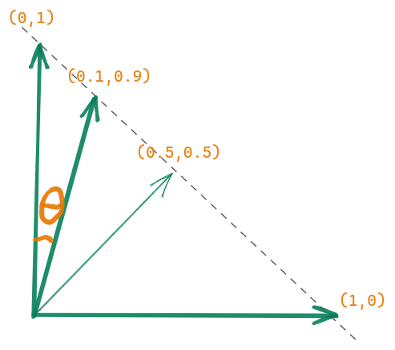
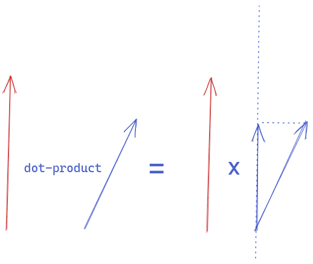
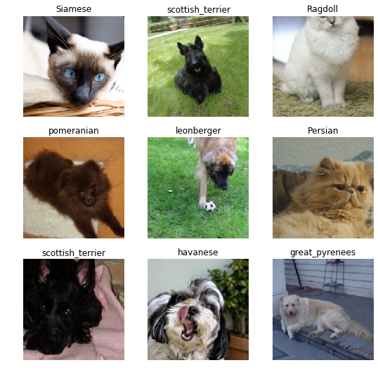
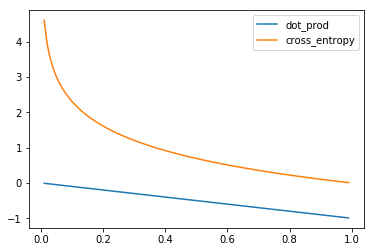
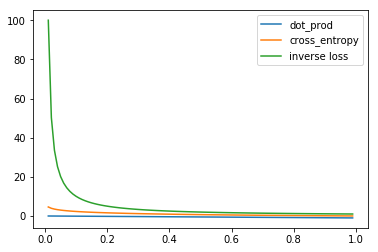
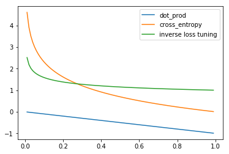

v1 = np.array([0,1,0,0]) # target vector
v2 = np.array([0.2,0.3,0.1,0.4]) # predicted vector
print(sum(v1*v2))0.3Walking through a simple Dot-Product to Cross-Entropy then finally a completely new loss function

In this blog post, I will try to explain the Classification Loss function from the perspective of comparing 2 vectors. We’ll start with the most simple loss: the dot-product of 2 vectors, with a simple modification we’ll have the Cross-Entropy Loss and then try to beat the result of Cross-Entropy with our one.
A vector is just an arrow with a direction and length. So for the binary classification problem, we have an output vector that has 2 elements and sum up to 1. [p1, p2] and p1+p2 = 1
Imagine we want our target vector to be [0,1]. The worst prediction is [0,1] and a good prediction could be [0.99,0.01]

We notice that \(cos(\theta)\) for \(\theta\) from 0° to 90° decreases strictly from 1 to 0 (from the best to worst prediction) so it can be an indicator for our prediction (And it exists - cosine similarity). Any function that has value increasing/decreasing strictly from the best prediction to the worst prediction can be considered a loss function
The dot-product has some relevance to the cosine mentioned above. The dot-product from a geometrical point of view is the projection of a vector to the direction of another vector and multiplying them both. And the projection is calculated by multiplying the cosine of the angle between these 2 vectors. But in this simple case, the projection is just the y value if our predicted vector is (x,y) and the target vector is (0,1). And the y value decreases strictly from 1 to 0 from the vector (1,0) to vector (0,1) . So the dot-product can also be a candidate for our loss function too

In the multiclass classification problem with the target vector encoded by one-hot vector (Vector has just one 1 value and 0 for all others position). The dot-product calculation is very simple. Taking the value in the predicted vector at its position in the target vector, we have 1. (Dot-product in algebra is just the sum of the element-wise multiplication)
v1 = np.array([0,1,0,0]) # target vector
v2 = np.array([0.2,0.3,0.1,0.4]) # predicted vector
print(sum(v1*v2))0.3For the Cross-Entropy Loss Function, instead of multiplying the predicted vector, we multiply the logarithm of the predicted vector
print(sum(v1*np.log(v2)))
print(np.log(0.3))-1.2039728043259361
-1.2039728043259361In the next section, we will experiment the dot-product loss function, the cross-entropy loss function and try to invent of own loss function by changing the function applying the the predicted vector (like logarithm in the case of Cross-Entropy)
In this part, we will experiment with our dot-product loss function, compare its performance with the famous cross-entropy loss function and finally, try to invent a new loss function that is comparable to the cross-entropy loss function.
The experiments use data from the Oxford-IIIT Pet Dataset and the resnet18 model from the fastai library
This part is simply for data preparation. Putting all the images and their labels into the corresponding dataloader
from fastai2.vision.all import *
path = untar_data(URLs.PETS)
items = get_image_files(path/'images')
def label_func(fname):
return "cat" if fname.name[0].isupper() else "dog"
labeller = RegexLabeller(pat=r"(.+)_\d+.jpg")pets = DataBlock(blocks=(ImageBlock, CategoryBlock),
get_items=get_image_files,
splitter=RandomSplitter(),
get_y = Pipeline([lambda x: getattr(x,'name'), labeller]),
item_tfms=Resize(224),
batch_tfms=aug_transforms(),
)dls = pets.dataloaders(path/'images')dls.c # number of categories in this dataset37dls.show_batch()
All our loss functions will have two parts. The first part is the softmax function - scaling our output to [0,1]. The second part is how we penalize our prediction - high loss if the predicted vector is far from the target.
def softmax(x): return x.exp() / (x.exp().sum(-1)).unsqueeze(-1)
def nl(input, target): return -input[range(target.shape[0]), target].log().mean()
def our_cross_entropy(input, target):
pred = softmax(input)
loss = nl(pred, target)
return losslearn = cnn_learner(dls, resnet18, loss_func=our_cross_entropy, metrics=error_rate)learn.fine_tune(1)| epoch | train_loss | valid_loss | error_rate | time |
|---|---|---|---|---|
| 0 | 1.621736 | 0.353662 | 0.110284 | 00:31 |
| epoch | train_loss | valid_loss | error_rate | time |
|---|---|---|---|---|
| 0 | 0.535891 | 0.278063 | 0.092016 | 00:41 |
This is a negative dot-production loss function because we multiply the result by -1 to make it increase from best to worst prediction
def dot_product_loss(input, target):
pred = softmax(input)
return -(pred[range(target.shape[0]), target]).mean()learn = cnn_learner(dls, resnet18, loss_func=dot_product_loss, metrics=error_rate)learn.fine_tune(1)| epoch | train_loss | valid_loss | error_rate | time |
|---|---|---|---|---|
| 0 | -0.485698 | -0.798422 | 0.179973 | 00:31 |
| epoch | train_loss | valid_loss | error_rate | time |
|---|---|---|---|---|
| 0 | -0.778386 | -0.841704 | 0.144790 | 00:42 |
Wow ! despite the simplicity of the dot-product loss function, we got not so bad result (0.14) after 2 epochs. Our dataset has 37 categories of pets and a random prediction will give us the error rate (1-1/37)=0.97. Can we do it better ?
How these 2 loss functions penalize the prediction is described as below. The target vector is always [0,1]
x = np.linspace(0.01,0.99,100) # the predicted vector at index 2
y_dot_product = -x
y_cross_entropy = -np.log(x)plt.plot(x, y_dot_product, label='dot_prod')
plt.plot(x, y_cross_entropy, label='cross_entropy')
plt.legend()
plt.show()
From the plot, we can see that the cross-entropy function penalizes more when we have a wrong prediction (kind of exponential shape)
In the next section, we will try others loss functions but the core idea is still based on the dot-product loss function.
Instead of multiplying by -1, we can inverse the predicted value to make it increase from best to worst prediction. Let’s see the plot below:
y_inv = 1/xplt.plot(x, y_dot_product, label='dot_prod')
plt.plot(x, y_cross_entropy, label='cross_entropy')
plt.plot(x, y_inv, label='inverse loss')
plt.legend()
plt.show()
The inverse loss penalizes may be too much compared to the 2 previous ones, no tolerance at all might be not so good. But let’s try it anyway
def inverse_loss(input, target):
pred = softmax(input)
return (1/((pred[range(target.shape[0]), target]))).mean()learn = cnn_learner(dls, resnet18, loss_func=inverse_loss, metrics=error_rate)learn.fine_tune(1)| epoch | train_loss | valid_loss | error_rate | time |
|---|---|---|---|---|
| 0 | 447.855957 | 11.976704 | 0.466170 | 00:19 |
| epoch | train_loss | valid_loss | error_rate | time |
|---|---|---|---|---|
| 0 | 50.260994 | 5.570698 | 0.258457 | 00:24 |
Ok, we have s worst result. But with this idea, we can easily tune the loss function. We can power the denominator with a value < 1 to decrease the penalization. For example 0.2
y_inv_tuning = 1/(x**0.2)plt.plot(x, y_dot_product, label='dot_prod')
plt.plot(x, y_cross_entropy, label='cross_entropy')
plt.plot(x, y_inv_tuning, label='inverse loss tuning')
plt.legend()
plt.show()
Let’s try this new loss function
def inverse_loss_tunning(input, target):
pred = softmax(input)
return (1/((pred[range(target.shape[0]), target]).pow(0.2))).mean()learn = cnn_learner(dls, resnet18, loss_func=inverse_loss_tunning, metrics=error_rate)learn.fine_tune(1)| epoch | train_loss | valid_loss | error_rate | time |
|---|---|---|---|---|
| 0 | 1.583183 | 1.099432 | 0.125846 | 00:31 |
| epoch | train_loss | valid_loss | error_rate | time |
|---|---|---|---|---|
| 0 | 1.174570 | 1.070881 | 0.091340 | 00:42 |
We get not so different error rate: 0.091 compared to 0.092 of the cross-entropy loss function.